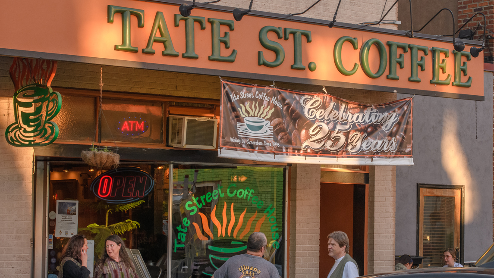
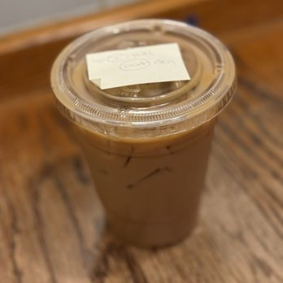
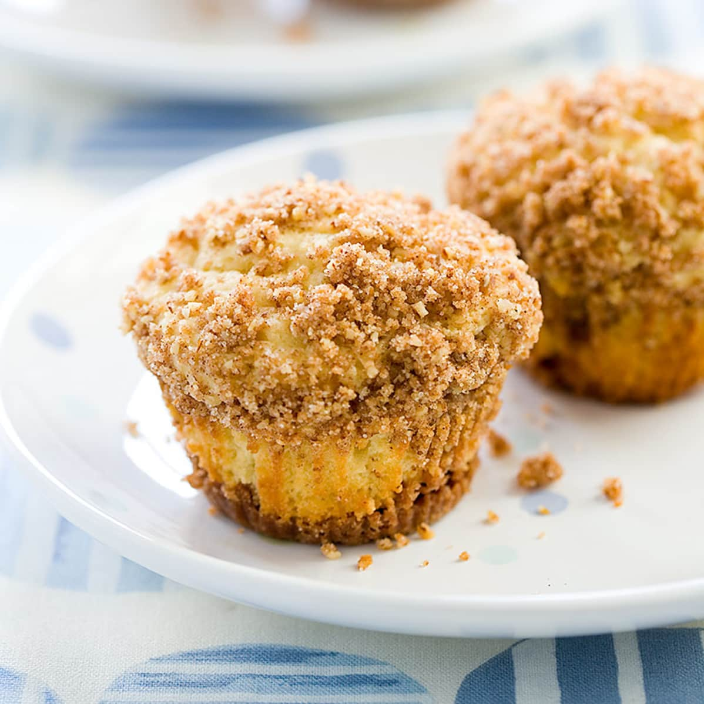

Tate Street Coffee House
One of the staples of Tate Street, the Tate Street Coffee House has been serving UNCG students and Greensboro residents since 1993! The location serves both food and coffee as well as providing a relaxing work environment for everyone!
Menu Items
Black and Tan Latte
A fan favorite, the Black and Tan blends sweet and bitter perfectly to please any coffee drinker.
Sausage, Egg, and Cheese

Exactly what is sounds like with the added bonus of being able to choose your own bagel (Everything, Asiago Parmesan, etc.)!
Muffin
More of a sweets person? Tate St. Coffee has a good supply of pastries including muffins!